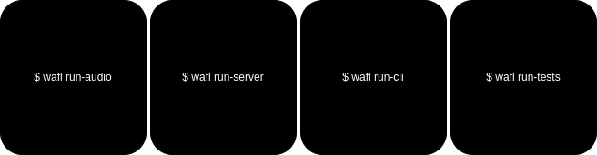

Running WAFL
This document contains a few examples of how to use the wafl CLI. There are four modes in which to run the system
wafl run-audio
This is the main mode of operation. It will run the system in a loop, waiting for the user to speak a command. The activation word is the name defined in config.json. The default name is “computer”, but you can change it to whatever you want.
wafl run-server
It runs a local web server that listens for HTTP requests on port 8889. The server will act as a chatbot, executing commands and returning the result as defined in the rules.
wafl run-cli
This command works as for the run-server command, but it will listen for commands on the command line. It does not run a webserver and is useful for testing purposes.
wafl run-tests
This command will run all the tests defined in the file testcases.txt.